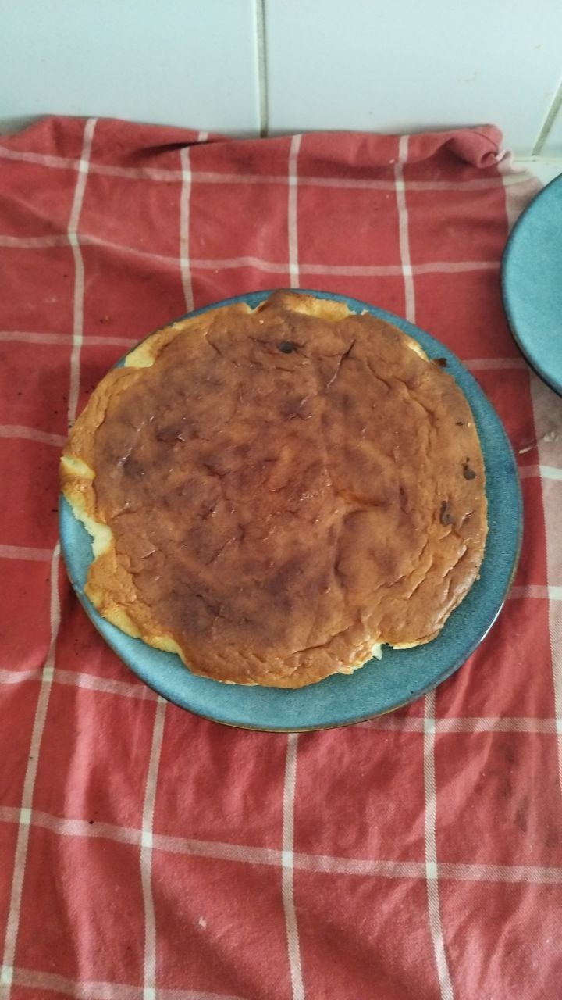

Optionally add toppings such as strawberries or other fruit, powdered sugar, matcha powder
instead of wheat flour, rice flour or mochiko also works
Strawberries work the best, other berries are also good
Do not overmix, otherwise the cake will not rise. Do not undermix, otherwise the egg whites will float at the top
If the dough isn’t rising, the temperature is too low. Increase the temperature by a few degrees and continue baking until it rises
If the cake cracks open, the temperature is too high, reduce by 5-10C